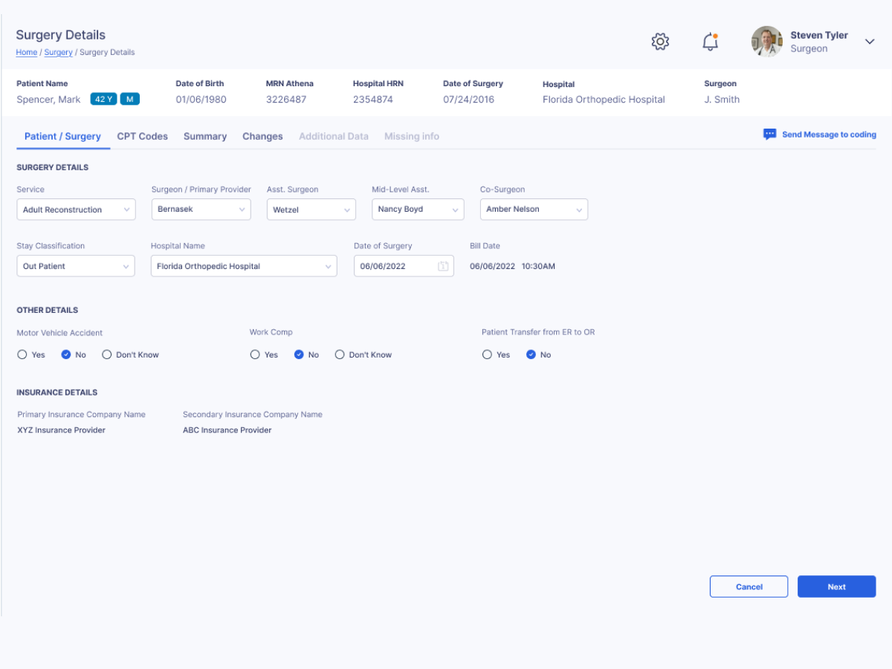
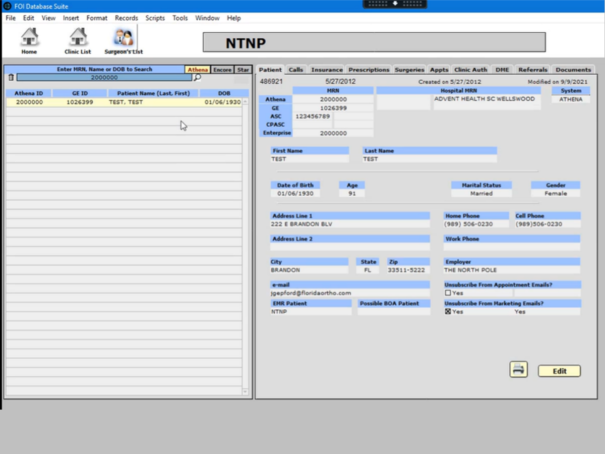
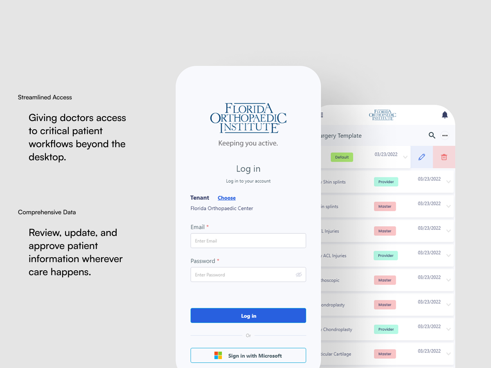
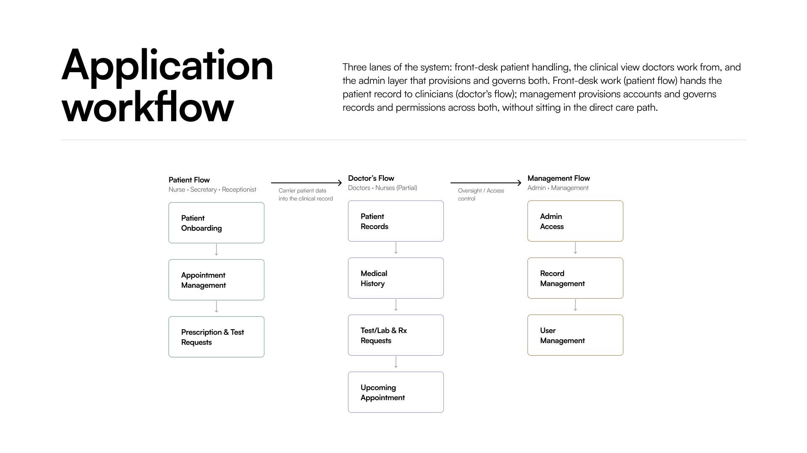
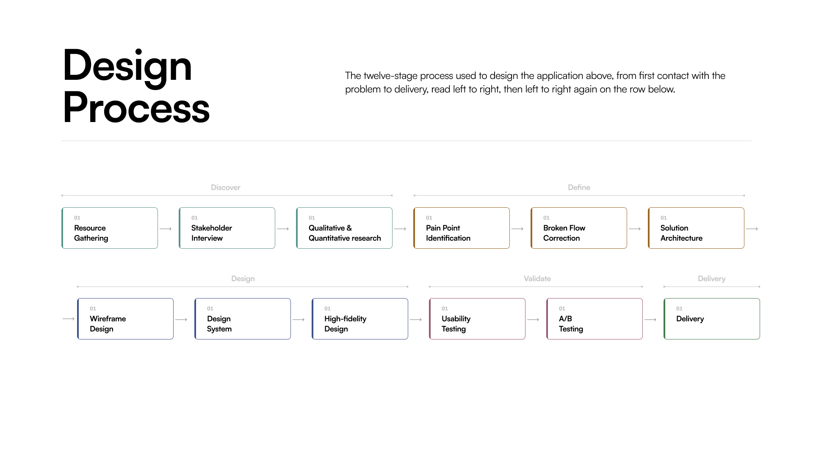

Florida Orthopedic Hospital
A comprehensive redesign of a legacy healthcare management platform to streamline operations, reduce cognitive load, and align cross-departmental workflows.

The Problem
The platform had accumulated years of feature additions without a cohesive UX strategy. A major challenge emerged when the primary stakeholder with deep knowledge of the system passed away shortly after project kickoff, leaving much of the platform undocumented.
Users frequently encountered:
- Information overload across multiple roles
- Redundant workflows and duplicate actions
- Multiple paths leading to the same outcome
- Communication gaps between departments
- Slow onboarding for new users


Legacy RedesignDrag to compare — the legacy FOI Database Suite against the redesigned surgery details screen.
My Role
I led the UX effort from discovery through delivery, working closely with stakeholders and development teams to understand the platform, define workflows, and redesign the experience end-to-end.
Core Responsibilities

The Approach
With limited documentation available, the first priority was understanding how the system actually worked. I conducted stakeholder interviews, analyzed existing workflows, reviewed competitor products, and performed a complete audit of the platform.
To establish clarity, I mapped every major workflow and dependency across departments. This documentation became the foundation for design decisions and development planning throughout the project.
Key Insight“Reconstructing the system was as important as redesigning it.”


The Outcome
The redesign streamlined hospital operations by simplifying complex workflows and improving accessibility for different user groups.
- Reduced onboarding effort through simplified registration.
- Enabled remote approvals for doctors via mobile.
- Improved workflow visibility across all departments.
- Created a documented framework as a single source of truth.